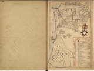
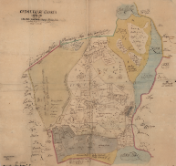

Klicka på kartorna för en större variant.
Välj PDF-nedladdning för att ladda ned hela Lantmäteriets akt som PDF.
Dessa kartor är kopierade från Lantmäteriets historiska kartor.
Enligt Lantmäteriet gäller följande angående upphovsrätt och publicering Kartor som är äldre än 70 år och flygbilder som är äldre än 50 år omfattas inte av upphovsrätten och kan därför publiceras fritt.
| Kartbild | År | Beskrivning | Ladda ned |
|---|---|---|---|
 | 1639 | Geometrisk avmätning | |
 | 1705 | Ägobeskrivning | |
| 1705 | Skattläggning |